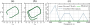

Motivation
Recursive predictors drift when the actuation regime changes.
Continuum robots are compliant, high-dimensional, and difficult to model accurately. Under shifted tendon commands, a model that looks acceptable for one-step prediction can accumulate small errors over a 200-step rollout until the predicted backbone moves toward the wrong steady response or becomes unstable.
Physics-only models
They remain interpretable and often stable, but simplified steady behavior can be biased under deployment commands.
Pure data-driven rollouts
They can fit transient behavior, but recursive evaluation exposes drift and out-of-distribution fragility.
Anchored residual learning
The proposed model keeps an explicit steady reference during recursion and learns only the missing transient correction.
Method
Separate steady-state anchoring from transient mismatch.
The hybrid predictor learns an equilibrium map from static data and a feature-lifted residual from dynamic trajectories. During rollout, each predicted state is first pulled toward the actuation-conditioned equilibrium estimate, then corrected by the residual.

Experimental Setup
A tendon-driven 3D continuum arm under actuation shift.
The state is a 144-dimensional reduced backbone representation sampled along the arm. The command is a 3-dimensional tendon displacement. Dynamic rollouts are evaluated over 6 seconds with `T=200` and `dt=0.03 s`.

Continuum-Arm Results
Anchoring improves long-horizon accuracy and suppresses drift.
On held-out out-of-distribution rollouts, the hybrid predictors reduce distal position error while preserving stable recursive behavior. The strongest gains appear where drift accumulates most: later rollout times and distal backbone segments.
Backbone RMSE reduction
Reduction relative to the equilibrium-only anchor on the continuum-arm benchmark.
Tip RMSE reduction
Improved distal position prediction over 200-step OOD rollouts.
OOD trajectories evaluated
Finite held-out trajectories used consistently across the retained continuum-arm scripts.


Additional Validation
The same design principle transfers beyond the main simulator.
The paper also validates the anchor-plus-residual idea on a soft-tail hardware test under frequency shift and on low-dimensional nonlinear benchmarks, where failure avoidance matters as much as average error.
Soft-tail hardware improvement
Hybrid lowers RMSE by at least 74% relative to the residual-only model under pump-frequency shift.
Van der Pol catastrophic rate
Hybrid maintains zero catastrophic-rollout rate across the reported snapshot counts.


Public Artifact
Code Release V1 contains the reproducible continuum-arm package.
The release keeps source code, core datasets, and compact summaries. It deliberately removes duplicate data copies, generated rollout caches, and scratch experiment folders.
Supplementary Video
Rollouts, qualitative comparisons, and hardware behavior.
The video summarizes the main continuum-arm rollout behavior and additional soft-tail hardware experiments.
Affiliations
Research team and institutions.
This project was conducted with collaborators from Peking University, FAW Group, and the Institute of Ocean Research at Peking University.
Citation
Reference the RSS 2026 paper.
Proceedings metadata can be updated here when RSS publishes the final entry.
@inproceedings{tanveer2026stabilizing,
title={Stabilizing 3D Continuum-Arm Rollouts via Equilibrium Anchoring and Feature-Lifted Residual Learning},
author={Tanveer, Ahsan and Afridi, Rahdar Hussain and Afridi, Waqar Hussain and Zhang, Feitian and Xie, Guangming},
booktitle={Robotics: Science and Systems},
year={2026}
}